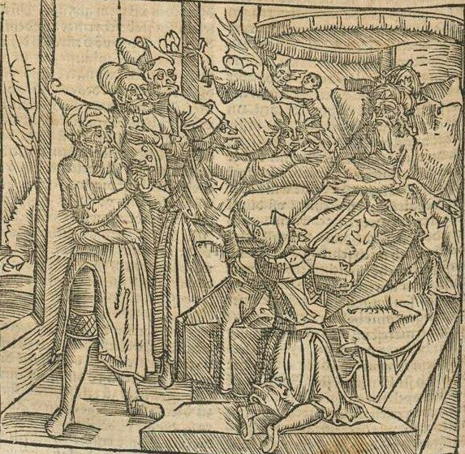
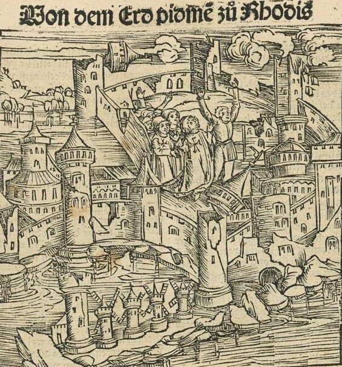
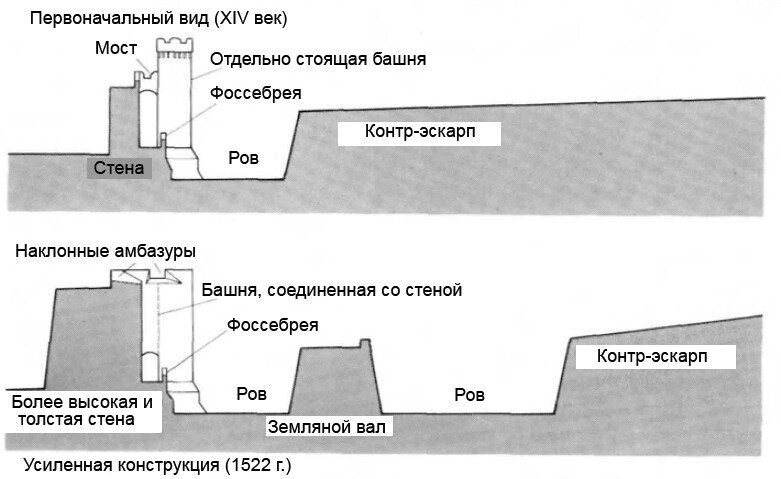
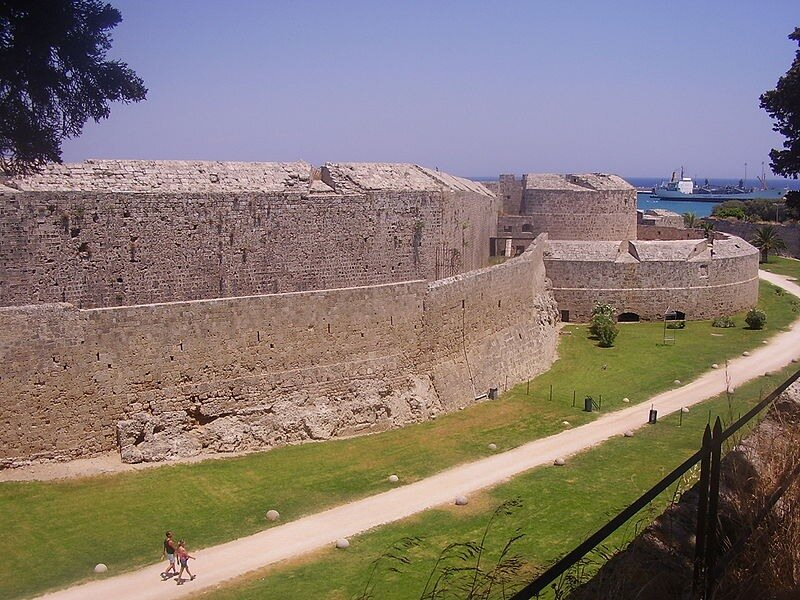
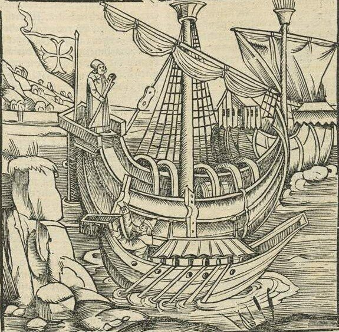
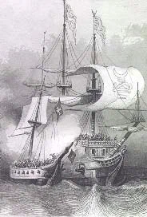

В 1481 году умер султан Мехмет II.

Развернувшаяся острая борьба за наследование престола между его сыновьями казалось дала госпитальерам желанную передышку. Но пришла новая беда: сильнейшее землетрясение 1481 года превратило Родос в груды развалин. Сильно пострадала экономика острова.

Иоанниты освободили население Родоса от налогов, бесплатно раздавали зерно из орденских запасов. Началось ускоренное восстановление фортификационных сооружений, административных зданий и частных домов. Дипломаты госпитальеров удачно использовали претензии на султанский престол со стороны младшего сына почившего султана – Джема, проигравшего битву за трон своему старшему брату Баязиду. Предоставив убежище Джему, Великий магистр Пьер д’ Обюссон надеялся использовать его как постоянную угрозу для Баязида и гарантию ненападения турок на орденское государство. Этот фактор действовал до 1495 года, когда Джем отошел в мир иной, не без помощи, как полагают, своего брата и известного отравителя папы Александра VI Борджиа.
После победы 1480 года родосские рыцари находились в зените славы. Написанная вице-канцлером Гильомом де Каорсином история осады, которую сопровождали отлично сделанные гравюры, прославила госпитальеров во всех уголках Европы и послужила им хорошей рекламой. За несколько ближайших после осады лет численность иоаннитов выросла на треть. Поток новых рыцарей (и, что немаловажно для восстановления укреплений, поток финансовых средств) устремился на Родос.
При восстановлении крепости производилась ее капитальная реконструкция. Стены города, имевшие прежде толщину около двух метров, были на первом этапе их восстановления расширены до 5 метров. Однако быстрое развитие осадной артиллерии сделало это увеличение недостаточным. Быстрыми темпами происходила замена железных пушек, стрелявших каменными ядрами, на бронзовые орудия и железные ядра. Несмотря на сопровождавшее эти изменения уменьшение калибра орудий, мощность их выстрела и точность стрельбы существенно возросли даже по сравнению с теми монстрами, которые были использованы турками при осаде Родоса 1480 года.
Лучшие мастера-артиллеристы того времени находились в Италии. Родос воспользовался их услугами, стремясь нейтрализовать выдающиеся успехи в развитии артиллерии у турок.
Пришлось срочно проводить и реконструкцию только что возведенных стен в сухопутных секторах обороны Родоса.

Еще больше была увеличена толщина стен – она стала достигать 12 метров. Произведено наращивание стен и в высоту, они практически сравнялись с угловыми башнями, которые стали просто частью стены. (Хотя, кстати, господствующая в это время тенденция диктовала снижение высоты укреплений, чтобы они не представляли такой прекрасной цели для осадной артиллерии. По идеологии это сравнимо с уменьшением высоты танков в нашу эпоху. Но к Родосу эта тенденция вряд ли имела отношение. Город окружен господствующими высотами, на которых и располагали осадную артиллерию). Стены снабдили наклонными парапетами со скошенными вниз бойницами – это, кстати, было первым примером такой конструкции в истории фортификационных сооружений. Эта конструкция хорошо видна на современном снимке.

Рвы были превращены фактически в большие каньоны, защищены прочными казематами и потаенными позициями артиллерии.
Большой вклад в укрепление города внес Великий магистр итальянского происхождения Фабрицио дель Карретто (Fabrizio del Carretto, 1513—1521). По его приглашению на остров прибыл один из самых знаменитых военных инженеров той эпохи итальянец Basilio dalla Scuola. В укреплениях появились башни, ставшие прообразом будущих бастионов.
Параллельно со строительством укреплений шло и наращивание флота иоаннитов. Еще в марте 1496 года великий магистр Пьер д’ Обюссон дал указания приору Мессины Паоло ди Салома пригласить на службу «вооруженные корабли любой нации и в любом состоянии, владельцы и капитаны которых имеют намерение и священное желание вредить разного рода неверным».

При этом он обещал добровольцам радушный прием на острове и право «торговать захваченными товарами, но только теми, что отняты у неверных, а не у христиан». В сентябре того же года капитул ордена поручает еще трем своим членам зафрахтовать и привести на Родос две галеры с различными товарами и материалами, необходимыми для строительства новых судов.
Наращивая флот, иоанниты не отстаивались в гавани, проводили дерзкие рейды к турецкому побережью, захватывали все новые мусульманские суда. 13 сентября 1507 г. шевалье Жак де Кастино (Jacques de Gastinau) на корабле Saint-Jean Baptiste захватил у побережья Крита крупнейший корабль и гордость египетского флота – «Могарбину» ("Магребину" в другой транслитерации), имевшую на борту множество знатных пассажиров и дорогих товаров.

Захватив «Могарбину», рыцари Родоса перестроили ее и переименовали в «Санта Марию». Она стала крупнейшим кораблем иоаннитского военного флота, вошедшим в историю как «Большая Каракка». О ней мы еще поговорим, когда будем рассматривать мальтийский период истории госпитальеров.
В 1510 году флот иоаннитов в составе двух эскадр, одной из которых командовал Филипп Вилье де л’Иль-Адам, а другой – Андре д’ Амараль, блокировал порт Александретту, где стояло несколько десятков египетских кораблей, груженых лесом. Иоанниты захватили 10 больших египетских торговых судов и 4 военные галеры и благополучно вернулись на Родос с захваченными кораблями, грузами и большим количеством пленных.
Между тем угроза Родосу все возрастала. Великий магистр Фабрицио дель Каретто направил в Европу, в качестве своего полномочного дипломатического представителя, Филиппа Вилье де л’Иль-Адама. Несмотря на все настоятельные просьбы орденского дипломата о помощи, папа и французский «король-рыцарь» Франциск I, занятые борьбой с Императором Карлом V Габсбургом в Италии, смогли предоставить рыцарям Родоса лишь незначительную помощь людьми и военными материалами. В это время османским султаном стал Селим I, сын Баязида II, принявший титул «Халифа Ислама» (духовного главы всех мусульман). В 1514 г. Селим разбил шаха Персии. В 1516 г. турки завладели всей Сирией, а в 1517 г. взяли столицу Египта Каир. В 1519 г. Селим подчинил свой власти весь Аравийский полуостров. Казалось, что для Родоса настал последний час. Однако в 1520 г. Селим скончался. На престол взошел его сын, Сулейман Великолепный, или Кануни (Законодатель). Через год умер и Фабрицио дель Каретто. Великим Магистром ордена св. Иоанна Иерусалимского был избран Филипп Вилье де л’Иль-Адам.